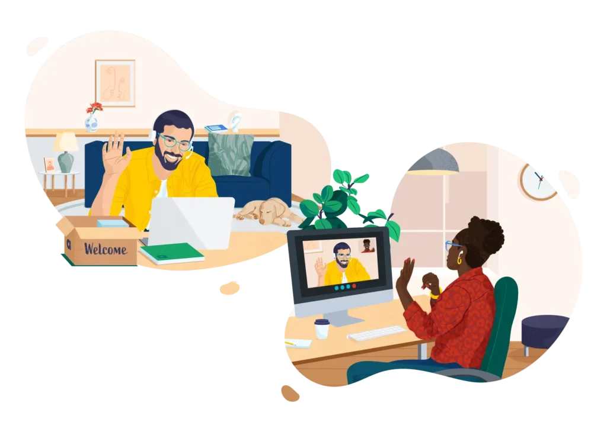

Social Recruiting
Offene Stellen werden nicht nur ausgeschrieben, sondern aktiv über Facebook, Instagram und passende Zielgruppenansprache sichtbar gemacht.
- Jobkampagnen auf Social Media
- Smartphone-freundliche Bewerbung
- Arbeitgebermarke und Recruiting-Content
